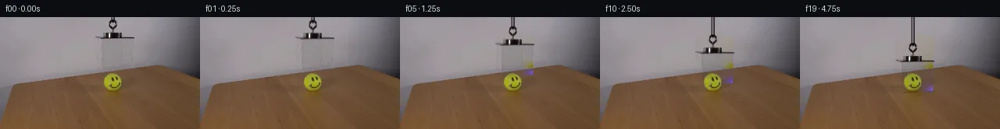

![首帧]()

Round 00
2026-11-05T07:59:49.202596+00:00像素候选变化代码 +196/−0inspection 更新
pixels 5dd0d05b385e017f · code f188f13fe3449007
查看本轮 generate.py 真实 diff
--- previous/generate.py
+++ current/generate.py
@@ -0,0 +1,196 @@
+"""PixelWorld continuation by source-derived optical layers and local interpolation.
+Only first_frame.png supplies scene pixels. No image tools or external models.
+"""
+from pathlib import Path
+import json
+import warnings
+import numpy as np
+from PIL import Image, ImageDraw
+from scipy.interpolate import SmoothBivariateSpline
+from scipy.ndimage import gaussian_filter, binary_dilation, distance_transform_edt, map_coordinates
+from artifact_io import save
+
+ROOT = Path(__file__).resolve().parent
+H, W = 144, 256
+Y, X = np.mgrid[:H, :W].astype(np.float64)
+
+
+def polygon(points, supersample=4):
+ mask = Image.new('L', (W*supersample, H*supersample))
+ draw = ImageDraw.Draw(mask)
+ draw.polygon([(round(x*supersample), round(y*supersample)) for x,y in points], fill=255)
+ return np.asarray(mask.resize((W,H), Image.Resampling.LANCZOS), dtype=float)/255.
+
+
+def displacement(t):
+ # A controlled lowering, with velocity continuous at each phase boundary.
+ vmax = 30.0 / 3.5
+ accel = vmax / 0.5
+ if t < 0.5:
+ return 0.5*accel*t*t
+ if t < 3.5:
+ return 0.25*vmax + vmax*(t-0.5)
+ if t < 4.0:
+ return 30.0 - 0.5*accel*(4.0-t)**2
+ return 30.0
+
+
+def extract_scene(src):
+ # Source enclosure footprint, including the photographed narrow roof lip.
+ body = polygon([(121,23.6),(131,23.6),(131,19.0),(139,18.0),
+ (143,16.5),(147,17.0),(153,18.7),(156,20.0),
+ (156,23.5),(169,24.4),(173,25.8),(172.0,29.0),
+ (170.0,54.0),(170,65.5),(144,67.4),(131,68.2),
+ (129,29.0),(121,27.0)])
+ # Numerical color contrast identifies the narrow suspension and its fringes.
+ luminance = src.mean(axis=2)
+ rope_core = (Y < 19) & (X >= 137) & (X <= 151) & (luminance < 145)
+ rope_mask = binary_dilation(rope_core, iterations=1)
+ rope_mask &= (Y < 19) & (X >= 136) & (X <= 152)
+ support = np.maximum(body, rope_mask.astype(float))
+ brown = (src[:,:,0]-src[:,:,1] > 16) & (src[:,:,1]-src[:,:,2] > 11)
+ # The source's table pixels at the rear boundary are static, not box material.
+ support[brown & (Y > 60)] = 0
+ support[support < .025] = 0
+
+ # A smooth B-spline model uses only observed, unoccluded gray wall samples.
+ # The hole spans ~40 pixels in an otherwise nearly textureless wall.
+ wall_samples = ((X >= 94) & (X <= 204) & (Y <= 72)
+ & (support < .015) & ~brown
+ & (src[:,:,0]-src[:,:,1] < 16)
+ & (np.abs(src[:,:,1]-src[:,:,2]) < 12)
+ & (src.mean(axis=2) > 110)
+ & ((X.astype(int) % 2) == 0)
+ & ((Y.astype(int) % 2) == 0))
+ sy, sx = np.where(wall_samples)
+ model = src.copy()
+ diagnostic = {'background_samples': int(len(sx)), 'spline_fit_rmse': []}
+ for c in range(3):
+ with warnings.catch_warnings(record=True) as caught:
+ spl = SmoothBivariateSpline(sx, sy, src[sy,sx,c],
+ kx=3, ky=3, s=len(sx)*1.65)
+ predicted = spl.ev(sx,sy)
+ diagnostic['spline_fit_rmse'].append(float(np.sqrt(np.mean((predicted-src[sy,sx,c])**2))))
+ region = support > 0
+ model[region,c] = spl.ev(X[region],Y[region])
+ if caught:
+ diagnostic.setdefault('spline_warnings', []).extend(str(w.message) for w in caught)
+ # Boundary blend makes the revealed clean plate meet untouched pixels smoothly.
+ dist = distance_transform_edt(support > .1)
+ interior = np.clip(dist/2.0, 0, 1)
+ # Black attachment/cord require full replacement even along their boundaries.
+ interior[(support > 0) & (src.mean(axis=2) < 110)] = 1
+ blend = support * np.maximum(interior, .35)
+ clean = src*(1-blend[:,:,None]) + model*blend[:,:,None]
+ clean = np.clip(clean, 0, 255)
+
+ # Beer-Lambert-style per-channel transmission, plus positive reflected light.
… diff truncated; 109 more lines …